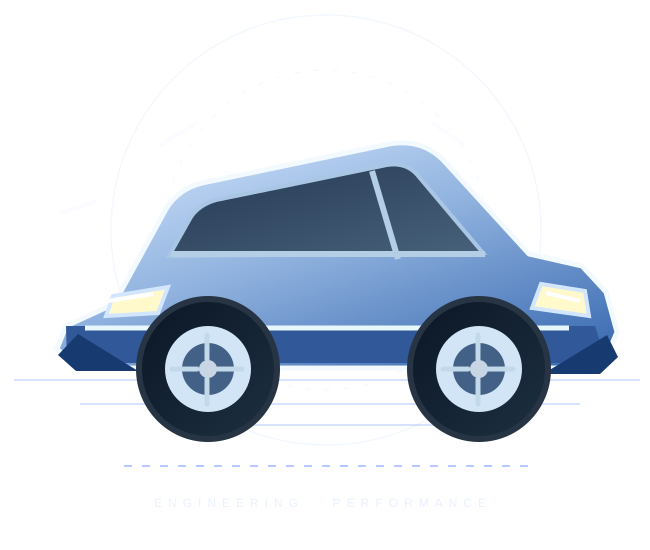

Revisão preventiva
Inspeção de componentes essenciais para manter o veículo em dia.
Uma apresentação moderna para oficinas que querem transmitir segurança, facilitar orçamentos e conquistar novos clientes.

Mostre suas especialidades com clareza. O visitante encontra o que precisa e pode chamar sua equipe em poucos cliques.
Inspeção de componentes essenciais para manter o veículo em dia.
Diagnóstico de falhas, reparos e acompanhamento técnico.
Verificação para mais estabilidade e segurança em seus trajetos.
Identificação de problemas eletrônicos e soluções adequadas.
Serviços ilustrativos. Ajuste conforme a especialidade real da oficina.
Conte o que seu veículo está apresentando.
Combine uma visita de acordo com a disponibilidade.
Entenda os próximos passos antes de aprovar o serviço.
Este formulário demonstra como uma oficina pode receber solicitações de orçamento pelo WhatsApp, sem precisar de um sistema complexo.